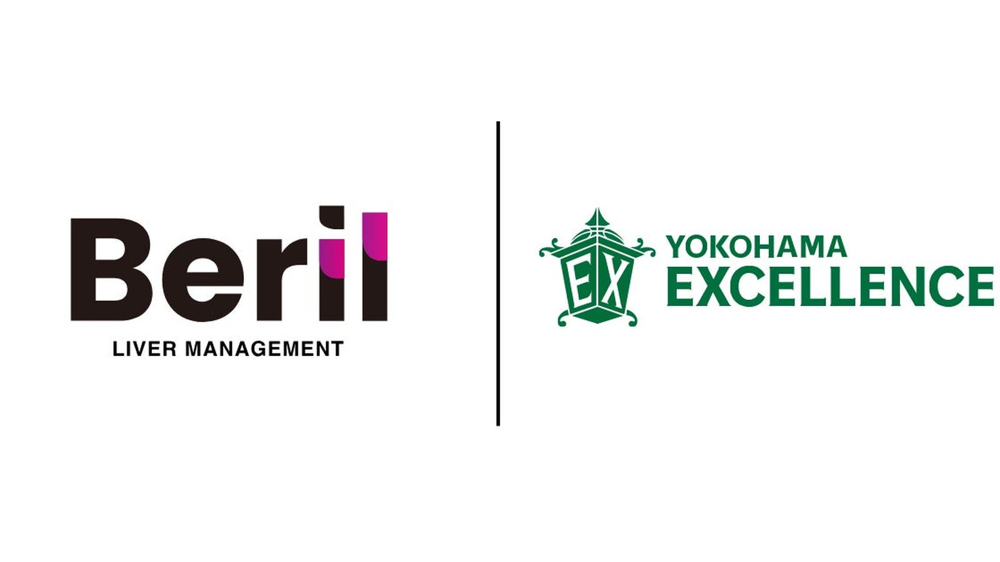

ライバー事務所Beril、 横浜エクセレンスと オフィシャルスポンサー契約 ——2026-27シーズンから冠試合開催
ライバーマネジメント事務所「Beril(ベリル)」を運営するlapaz株式会社は9月2日、B.LEAGUEに所属するプロバスケットボールクラブ「横浜エクセレンス」と2026-27シーズンのオフィシャルスポンサー契約を締結したと発表した。

ホームゲームでBerilの冠試合を実施
今回のパートナーシップの一環として、横浜エクセレンスのホームゲームでBerilの冠試合を実施する。lapaz株式会社の豊福ジャン代表取締役CEOはコメントで、Berilが事務所創業から4年間「日本一のライバー事務所を創る」という目標のもとで挑戦を重ねてきたと振り返り、冠試合や事務所イベントを通じて所属ライバーとリスナーに新しい体験を届け、クラブと地域の盛り上がりにも貢献したいとの考えを示した。
横浜エクセレンスとは
横浜エクセレンスは、株式会社横浜エクセレンスが運営する神奈川県横浜市をホームタウンとするプロバスケットボールクラブ。横浜武道館を主なホームアリーナとし、バスケットボールクラブの運営とプロスポーツ興行を通じて地域のスポーツ文化の創造に取り組んでいる。
出典: lapaz株式会社プレスリリース「ライバーマネジメント事務所Berilはプロバスケットボールクラブ「横浜エクセレンス」とオフィシャルスポンサー契約を締結しました！」（PR TIMES・2026年9月2日）
https://prtimes.jp/main/html/rd/p/000000005.000049198.html